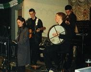
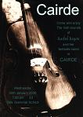
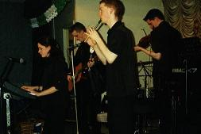
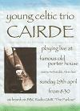
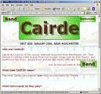
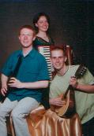
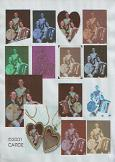
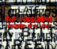

History
Story
The history of the band and its members, from 1999 to 2006, appears below, including details of Phil and Rob's former band Cairde. All the links open in new windows, and all the pictures can be clicked on to see them larger.
1999 — The Beginning of Cairde
Back in May 1999, a talented sixth-form student named Rachel Regan wrote some songs to sing while playing the piano. The songs had a passionate, folk feel, partly inspired by her Irish heritage on her father's side. She gathered a group of singers from Sale Grammar School, Greater Manchester, to accompany her. One of those singers, Phil Reed, had just started the exciting (and perhaps overdue) transition from playing recorder in a wind band to playing tin whistle, after listening to The Chieftains and The Corrs. He was eager to add the whistle to the songs. The group performed at a Young Performers' Concert at Sale Grammar School in June. Rachel and Phil then began to learn some common Irish songs, jigs and reels, with increasing enthusiasm for the soon-to-expand partnership.
That autumn, Rachel began an art foundation course at MMU and met more budding musicians: Rory Geraghty, an Oldham born fiddler, born to Irish parents, and Rob Mager, a vocalist/guitarist from near Rochdale, fresh out of a rock/indie band. They were eager to form a new band, including Phil. Once the new band was formed, they quickly came up with two full sets of music, comprising original compositions, old favourites, and folk songs and tunes. The band then decided on a name: 'Cairde,' pronounced something like 'corr-sha,' which means 'friends' in Irish (Gaelic).
2000 — First Shows and Radio
In January 2000 they had their full first performance, at Sale Grammar School, where they sold tickets to friends, family and staff. It was a success. Feedback from many in the audience included how refreshing it was to see and hear young people playing such well written music and strong songs, who sounded so natural together after such a short time. The band were most grateful to Daphne Sumbler and Karol Willmer, music teachers at the school, for their inspiration and encouragement.

In the following months, Cairde played to local audiences at Sale Excelsior and The Plough Inn, and had two promotional slots on local media: an interview and performance on TV (local show Granada Tonight) and live on radio (local station BBC GMR). By then, Phil had learnt to play the bodhrán and low whistle, which were incorporated into gigs, and Rachel had developed her fiddle, guitar and accordian playing in addition to her native piano. Rory already played guitar, bodhrán and whistle, but was accomplished and versatile enough on the fiddle that he never strayed from it in gigs. Rob also picked up the mandolin and bodhrán. They learned and composed more material, and continued to play through the year.
By December 2000, Rory had left the country to explore lands new, playing fiddle professionally in clubs in France and Spain. Rachel, Rob and Phil continued to play, and at the same time had the opportunity to record three pieces in a studio for a friend. They drafted in two violinists (Rachael Morris and Laura Stewart) and a cellist (Mandy Evans) from Sale Grammar School to accompany them on a track Rachel had written, called 'And He Says.'
2001 — Three Piece Band
 In 2001, the three-piece band played in a battle of the bands competition at The Famous Old Porter House in Altrincham, after a slot in another concert at Sale Grammar School, and two performances with a local choral group in Timperley village. Rob also accompanied John Sumbler, a classical violinist of the Yehudi Menuhin-College, at one of these events. The first band website was by Phil, and a screen shot is shown above.

This year, Cairde played gigs at The Plough Inn for the last time. Rob had begun studying Art and Design in Liverpool, so gigs became less frequent. Phil had also formed another band with another guitarist, Dwyer, and later another fiddler, Sean. The motivation of this new band was different — to play interesting, lively and moving pieces of traditional folk music, without the cheesy songs and tunes. After trying out many songs with different singers, (and many band name changes), Phil, Dwyer and Sean played at numerous bars in Chorlton, Levenshulme, Whalley Range and Davyhulme over the next five years. At the time of writing, the act goes by the name of Devil's Dance or Flogging A Dead Horse (depending on the venue).
2002 — Last Days of Cairde
In June 2002, Cairde played their final gig, as Rachel was called by the Emerald Isle and moved to Cork, working as a photographer. It was inevitable, but nonetheless, Rob and Phil found time to jam whenever they could. Rob was still studying in Liverpool, Rory was in Europe then later in the States, and Phil was studying in Manchester and playing with Dwyer regularly.
2003 — Interim
In March 2003, Rob and Phil were invited to play on St. Patrick's Night at Liverpool city centre bar The Excelsior. The reconnaissance was welcomed, as they played folk songs and favourite covers, along with new tunes Phil had learnt in the other band, to a crowd of mostly Irish students and gaelic football players. It was a memorable night, not least because Phil had already played a three hour gig with Dwyer that afternoon in north Manchester, after one hour's sleep following a migraine. They then hit the Liverpool club scene after playing!
2004 — New Beginnings
A similar night followed in March 2004: same day, same venue, even some of the same crowd! Though it was still a successful gig, the sound from just two musicians was a little thin. Their enthusiasm could only make up for that so much. Also, playing Irish music without a fiddle had always been difficult.
By the end of the year, Rob had completed his course and moved back to Manchester, and they met a violinist, Jenny Shaw. She was a music teacher, interested in playing many different styles of world and classical music. They tried a few songs together one afternoon, and she found harmonies and melodies for them instantly. At a party on New Year's Eve 2004, Rob and Phil decided to start playing again properly, with Jenny to join the band — after returning off holiday, she agreed. A new band, with a new name to match. The name would come later.
2005 — The Rossoneri is born
During the early months of 2005, bound by their new found enthusiasm, Rob and Phil taught Jenny some of their old repertoire, as they all learned new songs, and began to write their own too. Rob knew the BBC Poet for Manchester award winner, Mike Duff, who kindly provided some of his writings to become lyrics to new songs. These would be known as the 'Drunken Lullabies,' tales of sadness, joy and learning of people, local and around the world, across different difficult situations, such as prostitution in British cities (song 'Walking After Love'), and poverty in parts of Argentina (song 'On The Streets Of Buenos Aires'). The songs were not all of such deep issues, but were all touching none the less.

Once again, the offer to play for St. Patrick's Night in Liverpool came up, and the new band had its first gig. They had decided on a name, to reflect contrasting styles of music coming together (classical violin/recorder and folk guitar/tin whistle), and to display some of the passion that the sound created. They settled on The Rossoneri, which is Italian for 'reds and blacks,' two colours which are often used to represent passion, and the two colours of County Down's football shirt, lending its name to a song the band often played over the years.
The gig was a lot of fun. The violin blended well with the whistle, bodhrán and guitar, and the band came off stage (eventually, after four encores), ready to learn new pieces and play elsewhere.
During the summer of 2005, the three of them worked on writing a few more songs to the Drunken Lullabies, and played some at a singers' night in Didsbury. They played a few numbers with Phil's other band Devil's Dance, at a couple of their gigs in Chorlton. They always had someone in the bar dancing along, usually to the set of cheery polkas that Cairde always played, called John Ryan's and Egan's Polkas.

By the end of 2005, the band had played their first wedding gig (after the service and during the meal), their first outdoor stage (at The Full Irish family funday), several open mic slots, and part of two In The City acoustic show cases. Not bad for their first twelve months after forming!
2006 — Bigger and better
A promising, exciting year lay ahead, after played top bill at a local acoustic night (Iguana Bar, Chorlton). It lead to Rob, Phil and Jenny joining the new south Manchester music collective, Extraordinary Rendition. Gaining an accomplished rhythm section of bass, drums and percussion, The Rossoneri began to form a folk rock set, ready to play to larger audiences and needs. The result proved very popular, performing every weekend in April alone.
Eight years of Irish and popular music, by a group of musicians who aren't actually Irish (unless you count Phil's grandad!). They have three radio and a television broadcast under their belts, plus countless live performances at schools, festivals, pubs, clubs, private houses, and even a bingo hall. At least five violins, ten guitars, five pianos, four bodhráns and dozens of whistles have given The Rossoneri plenty of experience, ready to perform at your next event soon.
History by P. Reed, V. Penny, May/June 2006
Clips
Sound clips of Cairde will appear here soon.

{kind=link}
{kind=link}
{kind=link}
{kind=link}
{kind=link}
{kind=link}
{kind=link}
{kind=link}